Histo-Cooling 是一台密封设备。它在睡眠中监测抓挠，在抓挠发生时主动降温，并为每一次发作留下临床级的数据记录。我们为特应性皮炎、慢性荨麻疹等夜间瘙痒负担较重的疾病研究而做。 Histo-Cooling is a single sealed device. It watches for scratching during sleep, cools the skin when scratching starts, and keeps a clinical-grade record of every episode. We built it for research into atopic dermatitis, chronic urticaria, and similar conditions where night-time itch carries the burden.
夜间瘙痒是皮肤科疾病负担的核心指标，今天却仍靠病人次晨凭记忆打分。Nocturnal itch is the core burden marker in dermatology, yet it's still scored from next-morning recall.
UAS7 / SCORAD / NRS 全部依赖次晨主观回顾，系统性低估夜间发作。UAS7 / SCORAD / NRS all rely on morning recall, which systematically underestimates night events.
无法区分同夜多次发作，缺时刻、时长与分布数据。Multiple episodes in one night blur together, with no timing, duration, or distribution.
抓挠仅靠腕动仪间接采集，且只记录、不干预。Actigraphy captures scratching only indirectly, and only records it. Nothing acts on it.
症状日记自第四周起依从性崩塌，纵向数据缺失。Diary compliance collapses after week four, leaving gaps in the longitudinal data.
监测、干预、记录、自适应，全部在一台无风扇、无水泵、可用消毒湿巾擦拭的 IP68 设备里完成。Detect, respond, record, and adapt, all inside one fan-less, pump-less, disinfectant-wipeable IP68 device.
惯性传感器 + 睡眠状态机 + 频域分析，自主识别有效抓挠发作。IMU + sleep state machine + frequency-domain analysis identify valid scratch episodes.
驱动降温，打断瘙痒抓挠循环，全程受固化安全包络约束。Cools the surface to break the itch-scratch cycle, bounded by a hard-coded safety envelope.
带数字签名的时序事件，映射至 SCORAD / UAS7 / NRS 临床终点。Cryptographically signed time-series mapped to SCORAD / UAS7 / NRS endpoints.
依据干预是否有效，动态调整强度（受安全边界钳制）。Adjusts intensity by whether the intervention worked (clamped to the safety envelope).

设备结构概念剖视：闭环监测干预 + 全密封被动散热架构（示意图，非最终外观）Concept cross-section: closed-loop intervention + fully-sealed passive-dissipation architecture (illustrative, not final appearance)
睡眠状态机 + 频域抓挠识别 + 闭环干预序列 + 事件→临床终点映射。Sleep state machine + frequency-domain scratch detection + closed-loop intervention + event-to-endpoint mapping.
半导体制冷 + 液态金属导热总线 + 相变材料缓冲，无风扇无水泵，IP68 可消毒。Thermoelectric cooling + liquid-metal thermal bus + PCM buffer; no fan, no pump; IP68, disinfectable.
固化安全包络 · 支撑双盲的假性干预模式 · 设备签名 · 离线导出 · 容错存储。Hard-coded safety envelope · sham mode for double-blinding · device signing · offline export · fault-tolerant storage.
本地存储、无联网、无自动上传，仅用户主动发起时点对点本地导出；每次导出由设备唯一私钥在防篡改安全元件内签名，天然契合《个人信息保护法》与数据本地化要求。Stored locally, no internet, no auto-upload; export is local and point-to-point on user initiation, signed by a device-unique key inside a tamper-resistant secure element, which makes it inherently PIPL- and data-localization-compliant.
设备端完全离线、本地签名；"云"仅指经授权的研究分析平台（签名校验、终点计算、多中心看板）。边缘采集与云端科研，各司其职。The device is fully offline and signs data locally; "cloud" refers only to the authorized research-analytics platform (signature verification, endpoint computation, multi-site dashboards). Edge capture and cloud research each do their own job.
诚实复刻全密封主动降温硬件所需的时间，这是物理层面的护城河。The time to honestly replicate the sealed active-cooling hardware. That's a physics moat.
复刻可过审的临床级固件与数据完整性栈。For an audit-passing clinical-grade firmware & data-integrity stack.
复刻整套栈 + 临床验证 + 注册，且未必绕过专利家族。For the whole stack plus clinical validation and clearance, with no guarantee of clearing the patent family.
真正的护城河是专利 + 临床数据 + 注册证 + 药企关系的组合，而非任何单一专利。The real moat is the combination of patents, clinical data, regulatory clearance, and pharma relationships, not any single one.
客观量化夜间抓挠，并在发作时主动降温。Objectively quantify nocturnal scratching, and cool the skin as it flares.
为生物制剂研发提供客观终点，临床试验仪器进口替代。An objective endpoint for biologics R&D; import substitution for trial instruments.
本土可控的高端医疗器械，提升中国临床研究国际可信度。A locally-controlled high-end device raising Chinese research credibility.
为全球瘙痒研究提供客观、可复现的夜间终点，作为开放标准，惠及各地患者。An objective, reproducible nocturnal endpoint for global itch research, offered as an open standard for patients everywhere.
6+ 件分层专利布局，说明书冻结。6+ layered filings in place; spec frozen.
工程样机；台架验证；安全硬化；NMPA 预沟通。Prototype; bench validation; security hardening; NMPA pre-submission.
单中心临床先导；参照队列校准；药企/CRO 意向。Single-center pilot; reference-cohort calibration; pharma/CRO LOIs.
NMPA 二类注册；FDA De Novo 准备；首批临床试验部署。NMPA Class II; FDA De Novo prep; initial trial deployment.
我们正寻求种子资金、研发资源与临床/药企合作。欢迎孵化器、投资人、皮肤科研究中心与生物制剂申办方联系。We're raising seed funding and seeking R&D, clinical, and pharma partnerships. Incubators, investors, dermatology research centers, and biologics sponsors welcome.
founder@myelincloud.cn